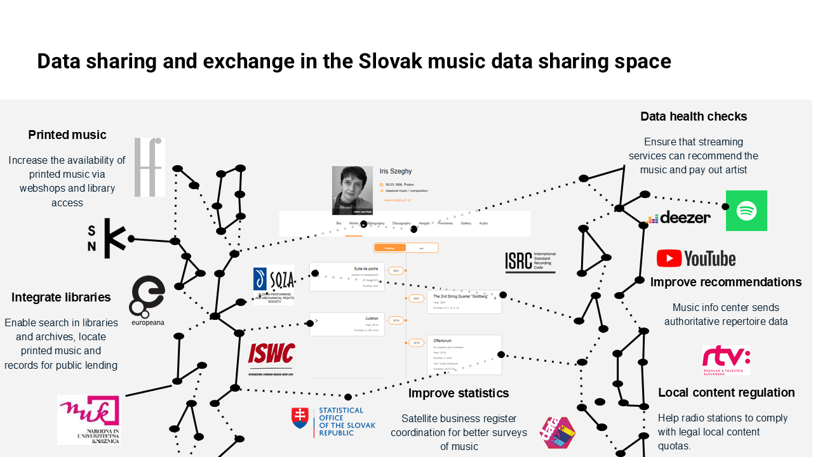
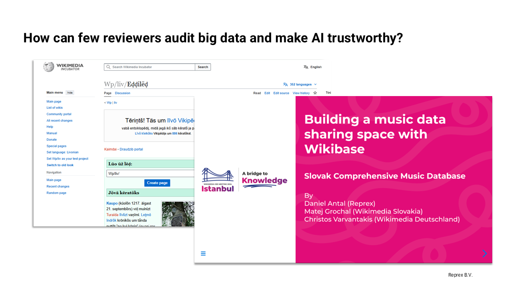
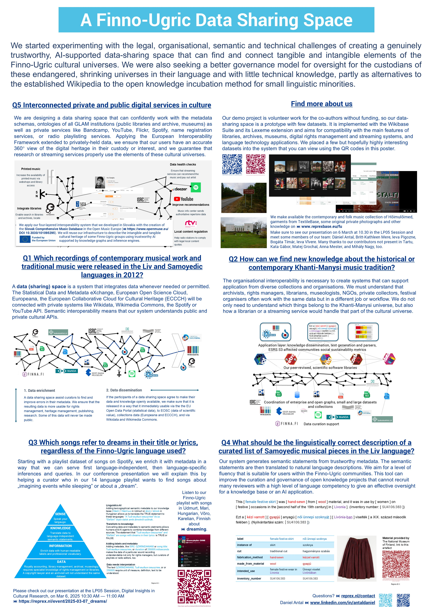
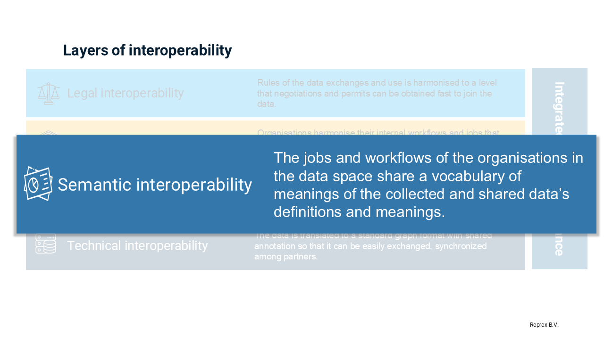
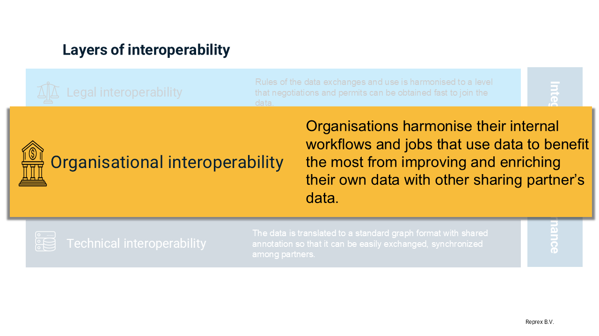
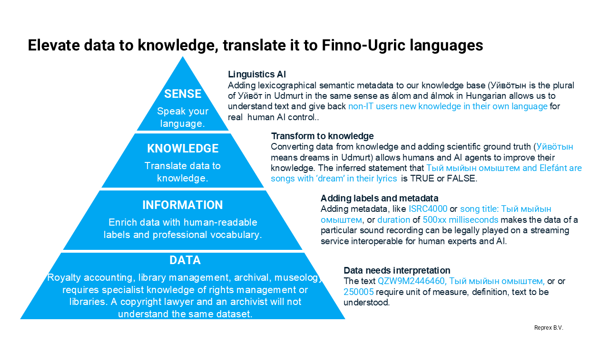
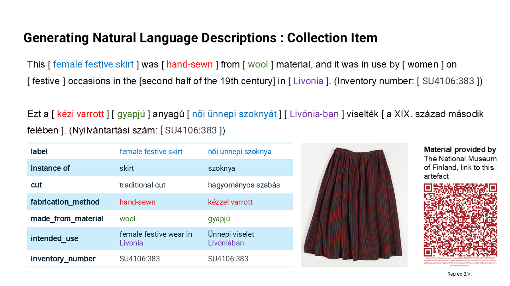
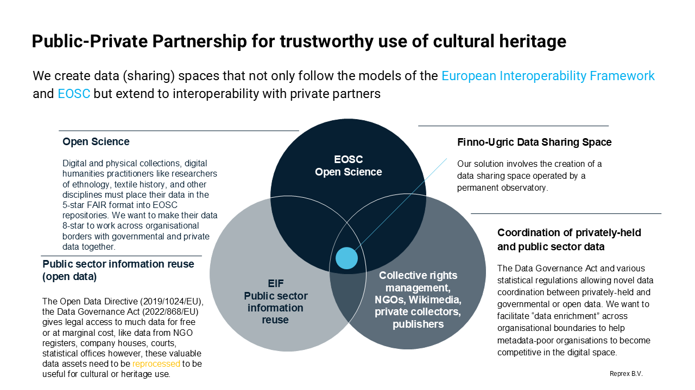
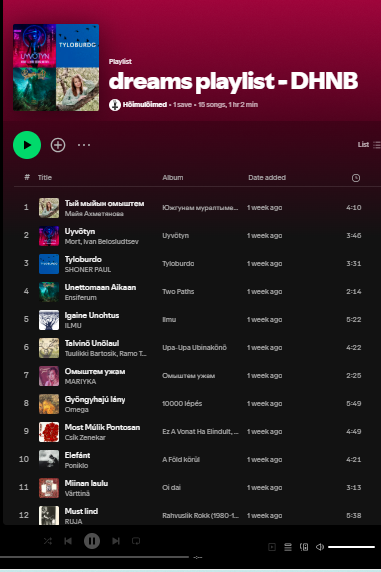

@prefix crm: <http://www.cidoc-crm.org/cidoc-crm/> .
@prefix dcterms: <http://purl.org/dc/terms/> .
@prefix schema: <http://schema.org/> .
@prefix ex: <http://example.org/entities/> .
ex:photo_610034 a crm:E22_Man-Made_Object ; # The photograph as an object
crm:P2_has_type ex:Photograph ;
crm:P4_has_time-span ex:year_1913 ;
crm:P108i_was_produced_by ex:photo_creation_event_1913 ;
crm:P62_depicts ex:seto_men_group_1913 ;
crm:P7_took_place_at ex:voemmorski_village ;
dcterms:subject ex:seto_men , ex:seto_traditional_male_clothing ;
dcterms:creator ex:estonian_national_museum ;
schema:inLanguage "et" ;
dcterms:isPartOf ex:muis_collection .
ex:photo_creation_event_1913 a crm:E12_Production ;
crm:P4_has_time-span ex:year_1913 ;
crm:P7_took_place_at ex:voemmorski_village .
ex:seto_men_group_1913 a crm:E21_Person ; # or an instance of E74_Group if individuals not known
crm:P131_is_identified_by "Setu mehed"@et ;
crm:P74_has_current_or_former_residence ex:voemmorski_village .
ex:seto_traditional_male_clothing a crm:E28_Conceptual_Object ;
crm:P2_has_type ex:Traditional_Clothing ;
crm:P70i_is_documented_in ex:photo_610034 .
ex:voemmorski_village a crm:E53_Place ;
crm:P87_is_identified_by "Võmmorski küla"@et ;
crm:P89_falls_within ex:setomaa_region .The Finno-Ugric Data Sharing Space
A Prototype for Multilingual Cultural Knowledge Incubation with Advanced Data Governance and Wikimedia Integration
Motivation and Background
The Finno-Ugric Data Sharing Space builds on a prior project that unified all known music ever recorded or produced in Slovakia (Ministerstvo kultúry SR and Open Music Europe 2023) together with a Wikipedian-in-residence. Although Slovak music represents a relatively compact cultural domain, the relevant information was scattered across multiple public and private institutions, each with its own metadata structures, languages, and access constraints. This earlier work demonstrated that, even within a narrowly defined cultural area, knowledge integration is complex and labor-intensive—but also highly impactful when successful. By coordinating diverse stakeholders and aligning their data practices, we created a shared knowledge infrastructure that respected institutional contexts while enabling broader discovery, reuse, and enrichment.

Finno-Ugric Data Sharing Space builds on a prior project that unified all known music ever recorded or produced in Slovakia. Although Slovak music represents a relatively compact cultural domain, the relevant information was scattered across multiple public and private institutions, each with its own metadata structures, languages, and access constraints.The Finno-Ugric Data Sharing Space extends this approach into an even more fragile and urgent domain: endangered linguistic and cultural communities. In this case, we are not simply aggregating and harmonizing fragmented open knowledge. We are engaging with disappearing cultural universes—contexts in which the languages themselves (such as Liv or Mari) are severely endangered, and the number of fluent speakers or cultural custodians may be in the dozens. Here, the risk is not only that knowledge may be lost, but that it may never have been documented in the first place, or only in languages and formats inaccessible to the communities of origin.
This dual challenge—of endangered knowledge and endangered language—demands a more comprehensive model. Our platform must support not only language-independent conceptualisation (e.g., structured metadata in RDF), but also the revitalization of language-bound representation (e.g., cultural descriptions written in Liv or Seto). The same object—a song, a garment, a photograph—must exist both as structured data and as culturally grounded, linguistically accurate narrative.
While our commitment to small Finno-Ugric communities is personal and specific, we believe the model we propose is broadly applicable. Many cultural and scholarly domains—such as interwar Slovak modernism or regional Sámi ethnographies—are also characterized by a small number of experts, a high dispersion of sources, and a lack of critical mass for traditional, crowd-driven knowledge curation. These are what we call high-friction knowledge spaces: areas where the cost of collecting, interpreting, and validating information is disproportionately high because of institutional, linguistic, or epistemic fragmentation.
The Finno-Ugric Data Sharing Space offers a blueprint for addressing these challenges. It is designed as a staging environment, compatible with Wikimedia’s platforms, where small communities can collaboratively curate, translate, and validate their cultural knowledge—on their own terms—before integrating it into the global commons.

Our project idea started to develop on the Wikimedia CEE 2024 Meeting when we discussed with Finnish, Estonian and Hungarian Wikipedians the possibility to give a boost to participation of minorities from the Finno-Ugric language group in Wikimedia projects. (Antal, Grochal, and Varvantakis 2024)
While Wikipedia plays a central role in global knowledge sharing, it also operates under general-purpose policies—such as notability criteria—that can unintentionally exclude the perspectives, figures, and artefacts of smaller communities. The narrower the cultural universe, the more likely it is that meaningful individuals, events, or objects will fall below these thresholds, despite their deep significance within their own context.
To address this, our platform includes a curatorial layer—currently called WikiGLAM—that allows the creation of virtual exhibitions and contextual collection pages. These pages do not compete with Wikipedia articles but instead complement them, providing a format where cultural specificity and community storytelling can flourish, even when individual items do not meet notability requirements. For instance, a Wikipedia article might not accept a page for each Seto singer, but a digital exhibit on “The Seto Singing Tradition” can present ten singers, with biographical context, images, and audio recordings—all linked through Wikidata and hosted via Wikimedia Commons. This curatorial model rebalances the representation of cultural minorities without diluting the editorial integrity of Wikipedia.

Prototype for PPP Knowledge Incubation Into the Wikimedia Ecosystem
Competency Questions: All Layers of the European Interoperability Framework Applied
To guide the design and implementation of the Finno-Ugric Data Sharing Space, we define the following key competencies the platform must address:
Q1: Define the Scope of the Cultural Universe
The platform is not intended to replicate a general-purpose encyclopedia. For communities like the Liv, with only a few hundred remaining speakers, the informational needs center on the preservation of their specific cultural world: geographic features bearing Liv names, remaining Liv-speaking villages and buildings, garments, oral traditions, folk songs, and the vocabulary needed to describe these in the Liv language. Our system must support the creation and structuring of a domain-specific encyclopedic resource, rooted in the cultural priorities of the communities it serves.

The Finno-Ugric Dataspace should support domain-specific encyclopedic content generation that reflects the cultural worldview and linguistic nuance of the Livonian community, rather than defaulting to general-purpose geographic knowledge as seen in standard Wikipedias. This content becomes the foundation of a Livonian-language encyclopedic resource—complementary to but distinct from global projects.
Q1: generate structured entries
Can the system generate structured entries and multilingual encyclopedic descriptions of culturally significant Livonian geographical locations, using the Livonian Place Name Catalogue as a source, and provide historical variants in Latvian, Russian, and German where available?
From the Livonian Place Name Catalogue, the place Irē (Livonian) / Mazirbe (Latvian) is one of the most significant locations in Livonian cultural memory. The system should be able to:
Represent the Livonian name (Irē), along with Latvian (Mazirbe), and historical Russian and German variants (Мазирбе, Maserwieken).
Link the place to its role in Livonian history and cultural revival (e.g., site of the Livonian House of the People).
Include geographical coordinates and administrative details.
Enable users to generate a short encyclopedia-style page or entry in Livonian, describing Irē’s cultural and linguistic relevance.
Link to associated artefacts, songs, photos, or oral histories from this location.
Q2: Bridge Institutional and Linguistic Silos
Knowledge about stateless or minoritized communities—such as the Seto, Mari, or Liv—is distributed across public and private collections in countries with different national languages (Latvian, Estonian, Finnish, Hungarian, Russian, German). These collections are managed under varied knowledge organization models typical to GLAM institutions. Our platform must support cross-lingual and cross-institutional discovery, enabling users to locate and contextualize Seto or Liv heritage materials scattered across multiple metadata regimes and languages.

The goal of the Finno-Ugric Data Sharing Space is to act as a cross-lingual, cross-domain discovery layer, allowing communities and researchers to access cultural heritage materials scattered across institutions and described in different vocabularies and languages. This enables community members, even without formal archival or linguistic training, to meaningfully engage with their heritage.
Q2 Can the system enable a user—regardless of their language proficiency—to discover and access bibliographic records, archival descriptions, and museum artefacts?
Can the system enable a user—regardless of their language proficiency—to discover and access bibliographic records, archival descriptions, and museum artefacts related to traditional Seto clothing from the 19th and 20th centuries, even when those records are stored in different institutions and described in Estonian, Russian, or German metadata schemas?
A user is researching Seto traditional women’s clothing, including:
The silver brooches and layered aprons worn during ceremonial events;
Garments documented in photographs or field sketches from 19th-century ethnographic expeditions;
Mentions in ethnographic bibliographies, published in Estonian or German;
Museum entries* in databases like MuIS (Estonian Museums Information System) where items are tagged with terms like “Setu rahvarõivad”, “Setu naise kostüüm”, or “женская одежда сето”.
The system should:
Recognize synonyms and multilingual terms (e.g., Setu = Seto, naise rahvarõivad = women’s folk clothing);
Normalize metadata differences across domains (e.g., MARC for bibliographies, ISAD(G) or RiC for archives, CIDOC CRM for museum artefacts);
Return a harmonized set of entries with linked metadata;
Optionally generate a multilingual summary of the findings and enable further semantic enrichment.
Q3: Translate Information into Structured, Interoperable Knowledge
Our system must be able to convert both structured (e.g., datasets, catalogue entries) and unstructured (e.g., books, photos, oral histories) information into semantic, RDF-based knowledge representations. To ensure cross-domain compatibility, we adopt a composite data model drawing from established ontologies: DCTERMS (libraries), Records in Contexts (archives), CIDOC CRM (museums), and copyright ontologies (for streaming platforms and contemporary media). For example, a museum photograph of Seto traditional clothing must be described in a language-agnostic, conceptually robust format that links garments, places, people, events, and creators.

Q3 Can the system extract structured RDF-based statements from mixed-format cultural heritage records?
Can the system extract structured RDF-based statements from mixed-format cultural heritage records—such as a museum photograph with a descriptive title and date—and represent them using interoperable, language-independent vocabularies that support integration across library, archive, and museum domains?
Example objects: MuIS Record: Setu mehed Võmmorski külas Setomaa vallas (1913)
Title (Estonian): Setu mehed Võmmorski külas Setomaa vallas
Date: 1913
Institution: Eesti Rahva Muuseum (Estonian National Museum)
Item type: Photograph
Language of metadata: Estonian
Collection domain: Museum (but relevant to archives and cultural ethnography)
From this item, the system should derive:
There exists a photograph as a physical/visual object.
The photograph was created in 1913.
The photograph depicts Seto men in Võmmorski village, in the Setomaa region.
Since the photo is of people in 1913 and is not marked “nude,” it implicitly depicts traditional Seto male clothing.
The image is part of a museum collection.
The location and people depicted have cultural and ethnographic significance.
Q4: Translate Structured Knowledge into Human-Readable Language
Many small communities lack trained librarians, information professionals, or technical ontologists. Therefore, we must offer tools and workflows that can convert structured data into natural-language descriptions in Liv, Mari, Seto, or other relevant languages. Using computational linguistics and native speaker input, we aim to generate readable, accurate sentences—enabling the production of culturally grounded encyclopedic content, and empowering community members to reclaim access to knowledge historically fragmented and dispersed across external archives.

Expected features
✅
Data grounding: Every part of the sentence can be mapped back to a specific RDF triple or identifier.✅
No hallucination: The output does not introduce facts not present in the data model.✅
Domain-appropriate naturalization: The sentence respects cultural terms (“Seto men”, “Võmmorski village”) and avoids overly technical phrasing.✅
Reference transparency: The institutional source (ERM), identifier, and URI are clearly included.
Q4 Can the system convert structured RDF-based knowledge to culturally appropriate, and verifiable sentences in natural language?
Can the system convert structured RDF-based knowledge—linking people, places, dates, and artefacts—into clear, culturally appropriate, and verifiable sentences in natural language, such as Livonian, Seto, Mari, or English, grounded in identifiable knowledge items and their provenance?
To offer community members, editors, or citizen curators a tool that:
Selects a set of RDF nodes (e.g., one photo, one person, one location)
Uses predefined or AI-augmented linguistic templates for generating narrative
Outputs fully traceable text in multiple target languages
Allows human validation or post-editing by native speakers
Example Workflow (based on Q3 TTL output):
Structured Input (summarized):
There is a photograph (
ex:photo_610034)It depicts a group of Seto men (
ex:seto_men_group_1913)It was taken in 1913 (
ex:photo_creation_event_1913)In Võmmorski village (
ex:voemmorski_village)It’s part of the Estonian National Museum collection
With item ID:
ERM Fk 213:172Permanent link: https://opendata.muis.ee/object/610034
Target Natural Language Output (English):
“This photograph, taken in 1913 in Võmmorski village (Setomaa), shows a group of Seto men and is held in the Estonian National Museum under the catalogue ID ERM Fk 213:172. The record is available at https://opendata.muis.ee/object/610034.”
Q5: Enable Legal and Technical Interoperability Across Public and Private Knowledge Sources
Much of the cultural heritage of small and stateless communities is held outside formal institutions—in private collections, family archives, grassroots NGOs, and online platforms. While significant effort has been invested in connecting public libraries, archives, and museums, our platform must also support legal and organizational frameworks that enable data exchange and enrichment between public and private stakeholders. This includes respecting intellectual property rights, cultural sensitivities, and varying levels of openness, while still enabling meaningful integration with Wikidata, Wikimedia Commons, and other open repositories. Our goal is to create an inclusive data-sharing model that recognizes the distributed nature of cultural custody in small communities.

To goal of or Finno-Ugric Data Sharing Space offer legally respectful, semantically rich representation of cultural materials sourced from non-institutional domains—especially those that are digital-first, grassroots-curated, and culturally vital, but fall outside traditional GLAM pipelines. It must make this data linkable and referenceable, even if full reuse is not permitted—thus reflecting the true complexity of the heritage landscape.
Q5 Can the system document, enrich, and share information about materials while respecting intellectual property rights, platform-specific terms of use?
Can the system document, enrich, and share information about community-curated cultural materials—such as playlists of contemporary Mari, Udmurt, or Samoyedic music—while respecting intellectual property rights, platform-specific terms of use (e.g., Spotify API rules), and the data-sharing preferences of private contributors or NGOs, and still enable integration with open knowledge platforms like Wikidata or Wikimedia Commons where legally and ethically possible?
Example: The Hõimulõimed Music Collection
A Set of playlists curated by the Hõimulõimed association includes:
Contemporary Mari folk-pop tracks available via Spotify
Experimental Udmurt and Samoyedic music hosted on Bandcamp
Unreleased or privately circulated tracks contributed by local musicians or families
System Responsibilities:
- Respect platform licensing
- For Spotify, adhere to Spotify’s Developer Terms when pulling metadata via the API
- For Bandcamp, respect artist-defined permissions (e.g., embeds allowed vs. not)
- Respect NGO & community rights
Hõimulõimed might retain curatorial or community-sourced contextual information
Metadata (e.g., language, artist background, cultural function of the song) should be attributed to them, with a Creative Commons or custom community license as applicable
- Semantic alignment with archival and Wikidata models
Describe each track using elements from
DCTERMS,FRBRoo, orSchema.org(e.g.,dcterms:creator,schema:inLanguage,schema:genre)Link playlists as curated thematic collections (e.g.,
schema:isPartOf→ “Contemporary Mari Folk Sounds”)
- Access control
materials unavailable for full reuse (e.g., non-commercial Spotify tracks) can be indexed, not embedded
For Wikimedia, only materials with compatible licensing (e.g., CC BY-SA) are directly transferred to Commons or Wikidata
Competency Questions: Involving Wikipedians and the Wikimedia Ecosystem
Q6: Integrate Contemporary and Non-Traditional Cultural Expressions
In many cases, the most vibrant and visible expressions of cultural identity are not found in traditional heritage institutions, but on commercial platforms and personal networks. For example, playlists of Mari folk-punk, Udmurt folktronica, or Seto death metal circulate primarily through Spotify and YouTube—not museums or archives. Our system must be able to recognize, document, and link to these contemporary cultural artifacts, treating them as part of the evolving knowledge base. This means supporting metadata ingestion from platforms like Spotify, retaining links to their rich descriptive ecosystems (e.g., genre, lyrics, release context), and providing tools for community annotation, translation, and contextualization.
|  | The following collections contain musical works that are almost always sung in the given language: Khanty Mansi Musical Works Collection; Samoyedic Musical Works Collection; Livonian Musical Works Collection; Veps Musical Works Collection ;Saami Musical Works Collection; Komi Musical Works Collection; Hungarian Musical Works Collection; Finnish Musical Works Collection; Mari Musical Works Collection; Udmurt Musical Works Collection; Estonian Musical Works Collection; Erzya Moksha Musical Works Collection The following collections as playlist contain sound recordings of the musical works, you can listen to them on Spotify. Khanti Mansi Playlist; Samoyedic Playlist; Livonian Playlist; Veps Playlist; Saami Playlist; Hungarian Playlist; Finnish Playlist; Mari Playlist; Udmurt Playlist; Estonian Playlist; Komi Playlist; Erzya Moksha Playlist. |
To goal of the FUD is to empower Wikipedians, citizen scientists and activists to contribute culturally and linguistically meaningful content that is is ethically shared and distributed, and which is curated collaboratively into language preservation resources, including dictionaries, lexeme repositories, and encyclopedic entries.
We also want to contribute to provide best use examples of the Wikimedia Commons, Wikidata, the Wikibase Suit, but even more the fledgling Lexeme extension and Wiktionary sister project, because the use of the Lexeme extension is currently lacking really good practices of integration with mainstream computational linguistic projects, and remains a bit cumbersome to work with even with people familar to the Wikibase Cloud or Suit solutions.
Q6 Can the system meaningfully integrate community-generated cultural expressions and transform these materials into structured, multilingual knowledge?
Can the system meaningfully integrate contemporary, community-generated cultural expressions—such as photographs, videos, oral explanations, and audio recordings—contributed by Liv, Seto, or Mari activists and citizen scientists, and transform these materials into structured, multilingual knowledge that supports Wikimedia’s broader mission in language and cultural preservation?
A Seto speaker uploads to Wikimedia Commons:
A recording of a traditional song, including an oral explanation of its meaning
A short video explaining how a ritual skirt is folded and worn
A written caption or story in Seto, containing several words not yet documented in Wiktionary or Lexeme
The system should:
Ingest and semantically link the media (e.g., via
schema:subject,schema:inLanguage)analyse the spoken and written text to identify potential new lexemes
With expert review, generate: Wikidata Lexemes with grammatical properties (e.g., verb forms, declensions); Wiktionary entries with definitions, pronunciation, example usage.
Link each lexeme back to its attestation context (the song, the ritual, the speaker), preserving linguistic richness and cultural grounding
Allow these outputs to feed back into future encyclopedic articles or WikiGLAM exhibitions in Liv, Seto, Mari, or multilingual format.
Q7: Use Computational Linguistics to Enrich Lexicographic Resources via Lexeme and Wiktionary Integration
The Liv, Seto, and Mari languages are primarily oral, with limited formal grammars or lexicons. Much of the linguistic content connected to cultural heritage—such as song lyrics, object descriptions, or oral histories—is undocumented or inconsistently recorded. Our platform aims to address this gap by using computational linguistic tools to extract structured linguistic data from community-provided texts and audio.
Rather than asking citizen linguists to populate Wikidata Lexemes or Wiktionary pages manually, we design a workflow that enables automated or semi-automated population of these resources. Community narratives, captions, or oral recordings connected to cultural artefacts (e.g., traditional garments, buildings, rituals) are analysed for vocabulary, morphology, and syntax, and the outputs are formatted for compatibility with the Lexeme extension of Wikibase as well as Wiktionary standards.
This approach does several things:
Improves linguistic documentation of small and endangered languages in structured, machine-readable formats;
Links lexemes directly to cultural context, grounding abstract vocabulary in lived practice;
Bridges community knowledge with Wikimedia’s structured linguistic ecosystem, making small languages more visible and semantically integrated.
By doing so, we make the Lexeme extension not just a passive repository, but an active interface between cultural knowledge, language preservation, and structured knowledge production—lowering the barrier of participation while improving linguistic data quality.
To turn cultural expressions from Q6 into linguistically structured outputs that:
Populate and enrich Wikidata Lexeme and Wiktionary
Strengthen formal grammatical understanding of oral or underdescribed languages
Provide community-owned language resources that support both preservation and active use
Q7 Can the system extract structured lexical and grammatical data from culturally grounded community contributions?
Can the system extract structured lexical and grammatical data from culturally grounded community contributions—such as songs, oral histories, and captions—and use computational linguistics tools to semi-automatically populate Wikidata’s Lexeme extension and Wiktionary entries, supporting formal documentation and visibility of Liv, Seto, and Mari languages?
Q8: Create Interpretive Layers That Complement Wikipedia’s Notability Criteria
Many elements of small or specialized cultural heritages—such as regional festivals, family-held artefacts, or influential community members—do not meet the general notability criteria required for inclusion in Wikipedia, especially in larger language versions like English. However, these elements are essential to preserving and understanding the cultural world of communities like the Seto or Liv.
Our platform addresses this by supporting curated digital exhibitions and thematic collection pages, such as those developed in our proposed WikiGLAM environment. These exhibitions are not encyclopedic entries per se, but interpretive presentations that provide context, narrative framing, and cultural linkage. They allow, for example, a single page on “Seto Singing Traditions” to present multiple individuals, songs, costumes, and local histories, with appropriate links to Wikidata and Wikimedia Commons, even if no individual item is independently notable.
This competency ensures that structural inclusion gaps in Wikipedia can be ethically and meaningfully addressed without undermining community norms—by offering a parallel format for expression and representation within the broader Wikimedia ecosystem.
The Finno-Ugric Dataspace should allow and support the creation of a WikiGLAM-style virtual exhibition page, as developed by the Estonian Wikipedia, with embedding of Commons-hosted images and videos; linking each item to its Wikidata entity (e.g., a costume, a festival, a village); bilingual or multilingual narrative (e.g., Seto, Estonian, and English); Attribution to community curators, knowledge holders, and institutions, and a clear URI for citation and long-term access.
Q8 Can the system support the creation of curated digital exhibitions?
Can the system support the creation of curated digital exhibitions—similar in form to the Müstiline ürgmeri page on Estonian WikiGLAM—that present culturally significant people, objects, and practices (such as Seto traditional costumes) through narrative, multimedia, and thematic storytelling, even when these subjects do not meet individual notability criteria for Wikipedia inclusion?
Our curator, or a museum curator wants to document the evolution of Seto women’s traditional clothing from the 19th century to the present with the inclusion of citizen scientists and Seto activists with the following content, including:
Photographs of garments from museum collections and family archives
Descriptions of how garments were worn, made, and passed down
Personal recollections or quotes from Seto women about their significance
Explanations of the symbolic meanings of specific colors or embroidery
Biographical notes on seamstresses or dancers who wore these clothes
Individually, these elements may not qualify for standalone Wikipedia pages—e.g., a single apron design or the life story of a local seamstress. But together, they form a culturally rich narrative that deserves preservation and visibility.
Policy Alignment and Ethical Governance
While the Finno-Ugric Data Sharing Space introduces technical innovations in data modeling and interoperability, its deeper aim is to restore governance of cultural knowledge to the communities it concerns. For communities like the Liv, Mari, or Seto—whose cultural heritage is widely scattered and whose languages are endangered—the ability to access, review, and represent their own cultural record is often constrained by external cataloguing practices, linguistic barriers, and institutional gatekeeping.
Our project reimagines data governance not merely as compliance with standards, but as a process of empowerment. We use policy frameworks such as the European Interoperability Framework (EIF) and the Data Governance Act (DGA) not as goals in themselves, but as tools to support a deeper ethical objective: enabling communities to reclaim agency over how their knowledge is curated, contextualized, and shared.
Making Interoperability Meaningful
The EIF is typically used to guide the design of digital public services across EU member states. We apply it in a new context: community-facing knowledge infrastructures for small-language and niche cultural domains. By aligning legal, organizational, semantic, and technical layers, we enable knowledge to flow across institutional and national borders—making it legible and actionable for the communities it describes. For example, we analyse how a traditional garment might be described differently in archival and library metadata, and we use that understanding to design interoperability that reflects both institutional logic and community meaning. (Curry 2020; EBU and Gaia-X 2022, p16; Nagel and Lycklama 2021)
Making Governance Participatory
The DGA creates legal pathways for data altruism and data intermediation, allowing privately held data to be shared for the public good under new governance models. We build on this by offering a platform where community actors can act as curators, reviewers, and contributors, even when they are not formal institutions. Our system respects provenance, attribution, and usage rights—while ensuring that data about communities is never decoupled from the communities themselves. This aligns with the DGA’s vision of lawful, ethical data sharing, but also extends it toward participatory cultural stewardship.
From Infrastructure to Oversight
Ultimately, we see interoperability and governance frameworks as enablers of ethical oversight, and frameworks of making AI-supported systems like ours trustworthy with real human control. Small and underrepresented communities must be able not only to access what is known about them, but also to critically evaluate and revise that knowledge. They must be able to question categorizations, restore missing context, add language-specific nuance, and share knowledge in the forms and formats they choose. Our staging environment makes this possible by integrating structured data, human-readable language generation, and review workflows that center community consent.
In this sense, the Finno-Ugric Data Sharing Space is not just a technical platform—it is a prototype for community-led knowledge governance in the digital age.
References
Antal, Dániel, Michal Grochal, and Christos Varvantakis. 2024. ‘Building a Music Data Sharing Space with Wikibase’. Zenodo. https://doi.org/10.5281/zenodo.8046977.
Curry, Edward. 2020. ‘Dataspaces: Fundamentals, Principles, and Techniques’. In Real-Time Linked Dataspaces: Enabling Data Ecosystems for Intelligent Systems, 45–62. Cham: Springer International Publishing. https://doi.org/10.1007/978-3-030-29665-0_3.
EBU, and Gaia-X. 2022. ‘Dataspace for Cultural and Creative Industries. Position Paper. v.2.0’. Gaia-X. https://gaia-x.eu/wp-content/uploads/2022/10/EBU_position-paper_Media-Data-Space.pdf.
Ministerstvo kultúry SR, and Open Music Europe. 2023. ‘Memorandum o porozumení o využití výsledkov analýz otvorených politík v kontexte slovenského kultúrneho a kreatívneho priemyslu a sektorových verejných politík v spolupráci s konzorciom pre výskum a inovácie s názvom OpenMuse. [Memorandum of Understanding on utilizing the Open Policy Analysis results of the OpenMuse Research and Innovation Consortium in the context of Slovak cultural and creative industries and sectors’ public policies]’. https://www.crz.gov.sk/zmluva/7645338/.
Nagel, Lars, and Douwe Lycklama, eds. 2021. ‘Design Principles for Data Spaces. Position Paper. Version 1.0.’ Open DEI. https://doi.org/10.5281/zenodo.5244997.